| 日付 | 2015年9月19日（土） - 2015年9月23日（水） | ||||||
|---|---|---|---|---|---|---|---|
| 山域 | 東北の山 | ||||||
| メンバー | 家族（妻、長女・4歳、長男・2歳） | ||||||
| 山行形態 | 子連れ4泊5日ホテル泊 | ||||||
| アクセス | 車、バス、ロープウェイ、タクシー | ||||||
| ルート (Map3) |
|
4日目
朝、宿でパンフレットを見ていたら鳥が飛んできた。
こんなに無警戒な鳥も珍しい。
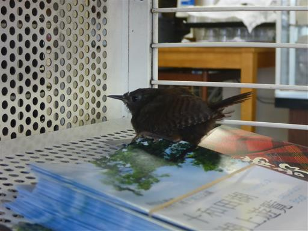
本日も昨日に引き続き快晴予報だが、湿度は90%と嫌な予感。
十和田湖周辺は晴れ渡っていたが、案の定、八甲田山には雲がかかっている。
とりあえずロープウェイ駅に移動する。
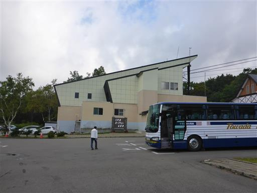
ロープウェイに乗って山上公園駅に行ってみたが、辺りは真白で視界はない。
雨が降っていないだけまだましという状況だ。この山が晴れることはあるのだろうか？
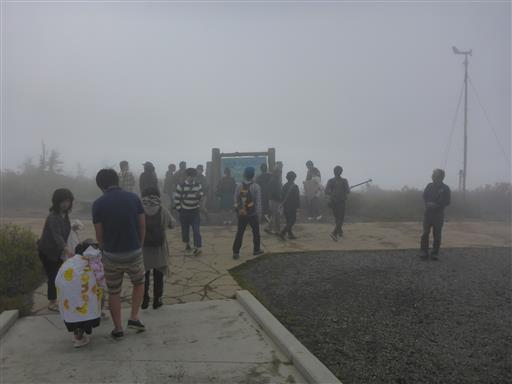
とりあえず歩き始める。
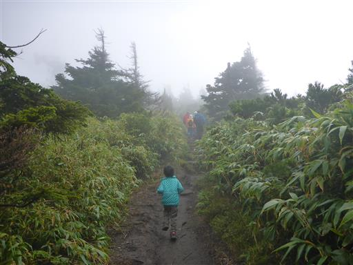
ナナカマドの実がなっている。
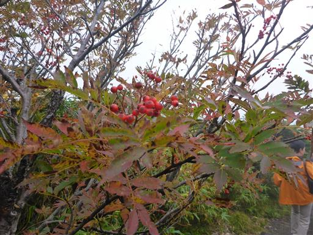
道は泥でぐちゃぐちゃ。スニーカーを履いた観光客は歩くのが大変そうだ。
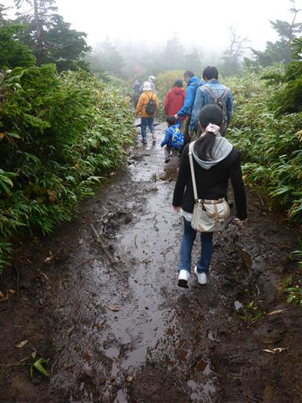
田茂萢湿原に到着。湿原らしきものが広がっているが、ほとんど何も見えない。
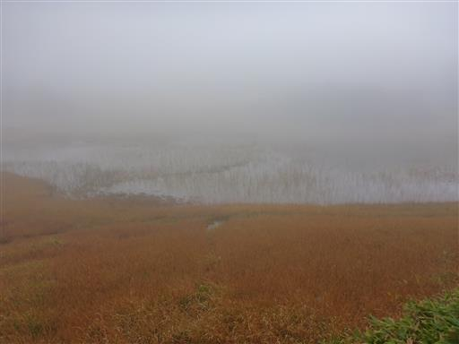
途中から道は木道が整備される。
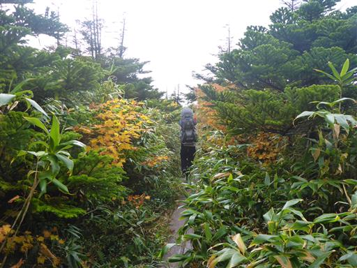
紅葉が美しい。まだ9月なのにもう紅葉が始まっている。
視界がほとんどないので、紅葉を楽しみながら歩いていく。
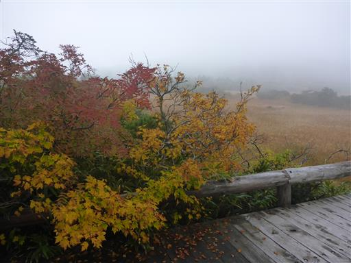
分岐点に到着。観光客向けの周遊道はここまでで、ここからは登山者の世界になる。
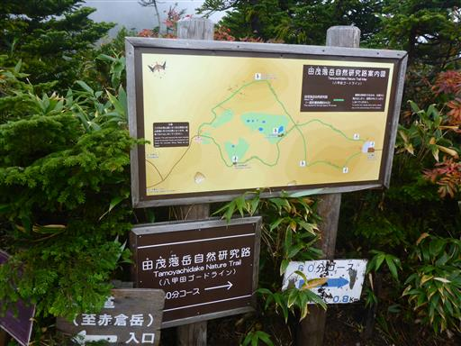
上空に少しだけ青空が見える。早く雲が取れてほしい。
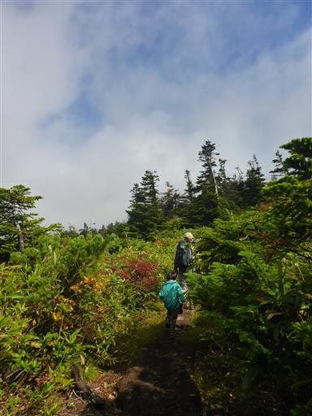
赤倉岳へのきつい登りが始まる。
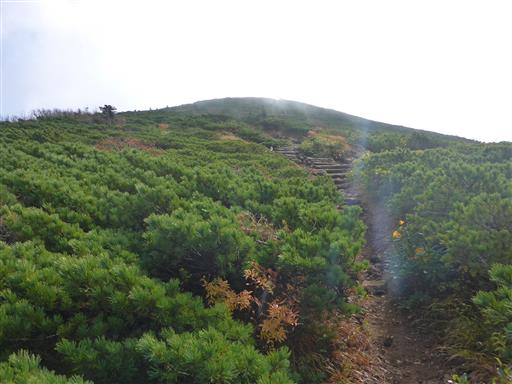
時々雲が取れて展望が広がる。湿原の一番奥がロープウェイ乗り場だ。
ずっと雲に覆われていたので、少し展望が広がるだけでもうれしくなる。
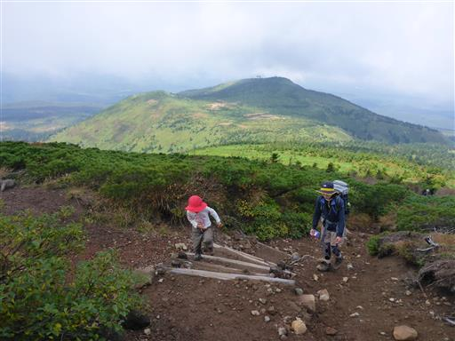
足元にイワギキョウの花が咲いている。
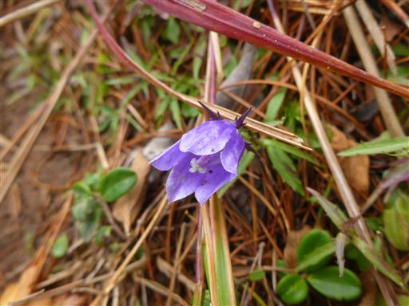
赤倉岳の一角に躍り出る。西から雲が湧きあがっているため、東側は比較的展望が広がる。
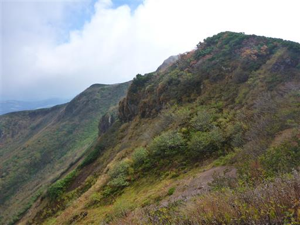
稜線は吹きさらしで、かなり風が強い。
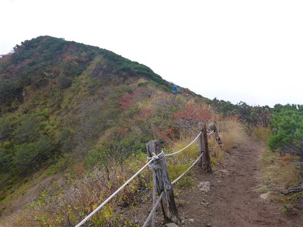
赤倉岳の爆裂火口。地層が縞々になっているのが見える。
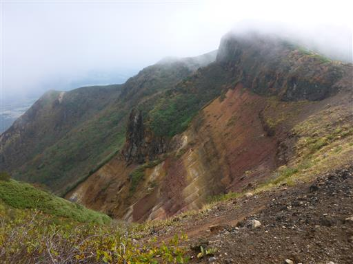
赤倉岳の山頂に到着。標高1548m。
風が強いため、少しおやつを食べてすぐに出発する。
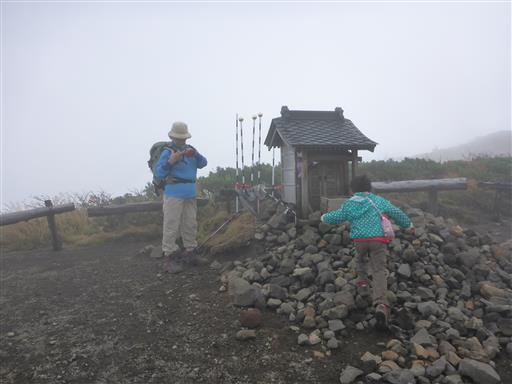
遠くに一瞬だけ大岳らしき山の頂上が姿を現す。
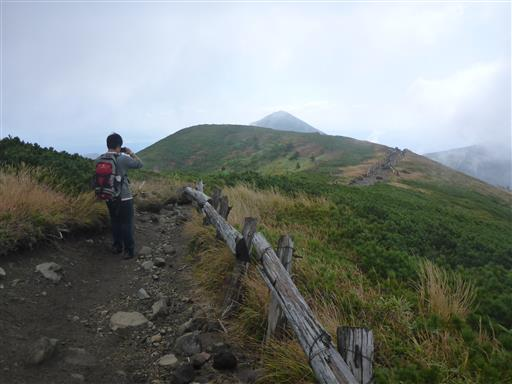
吹きさらしの稜線は続く。なかなか辛い登山道だ。

お隣の井戸岳に到着。標高1550m。
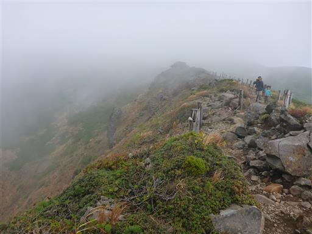
山頂には直径200m、深さ60mの噴火口がぽっかりと口を開けている。
本当の山頂は穴の向こう側なのだが立入禁止だ。
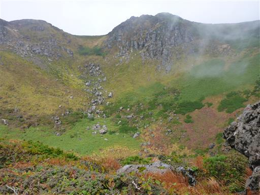
息子が風を嫌がるため、風の無い場所まで先行して下山する。
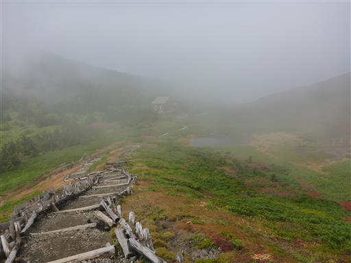
窪みに小さな池ができている。

大岳避難小屋に到着。ほっと一息だ。
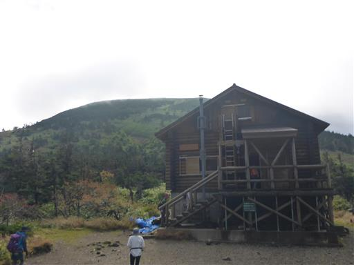
避難小屋の前にはベンチが並んでいるが寒々しい景色だ。
小屋内は混雑していたので、外で食事を取る。この辺りは稜線に比べると風が弱い。
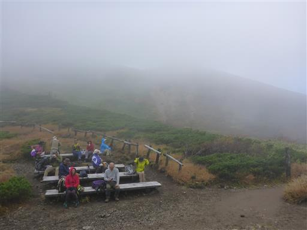
食事後、子供たちは避難小屋で休ませて、一人大岳を往復することにする。
空身で歩けば一瞬で往復できる距離だ。

中腹から、遠くロープウェイ乗り場まで見えている。天気は回復傾向だ。
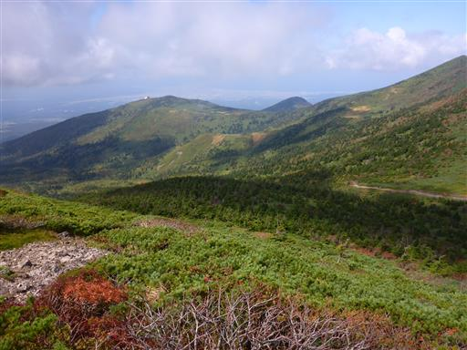
森林限界を超える。風は吹いているが、一人だと誰にも気を使う必要が無いため楽だ。
冷静になって考えてみると、大した風ではない。
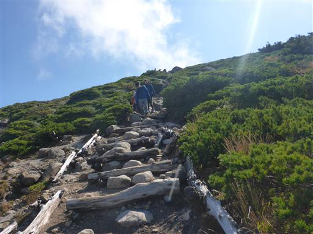
背後には先ほど登った井戸岳が横たわっている。
ここから見ると、山頂の噴火口の他に、斜面にも大きな穴が開いていることが良く分かる。
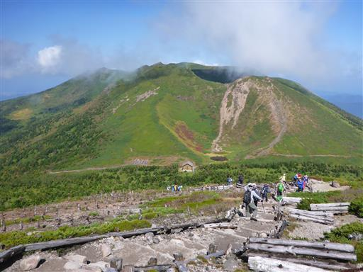
大岳に到着する。標高1585m。
ここが八甲田山の最高峰だ。
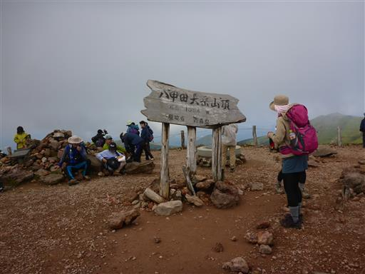
山頂はそこそこの展望が広がる。
右から小岳、高田大岳、雛岳。手前に見えるのは大岳の噴火口だ。
高田大岳は一際立派なピークだが、ここよりも若干標高が低い。
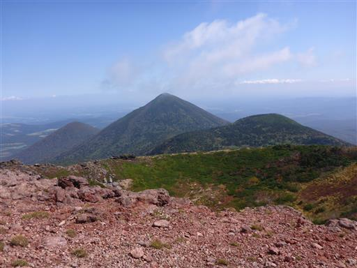
南八甲田山方面は雲に覆われている。
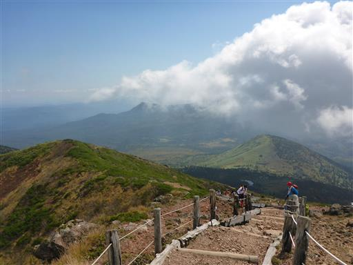
上空も青空は見えないが、いくらか展望が得られてよかった。
家族を下で待たせているため、早々に出発する。
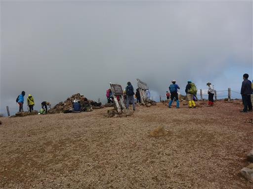
避難小屋に着いたら家族と合流して下山を開始する。
目指すは眼下に見える毛無岱だ。
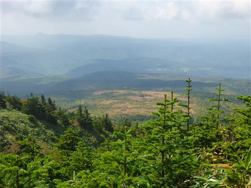
紅葉に彩られた道を下る。今日は娘は順調に歩いている。
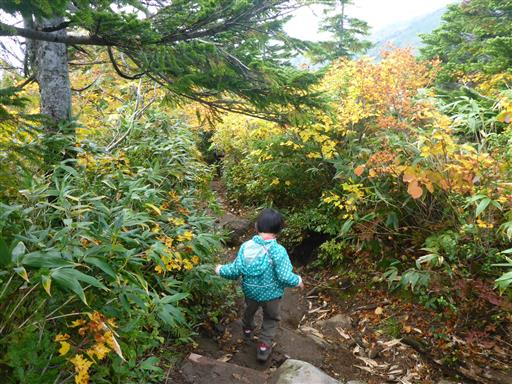
毛無岱の木道に到着。ここから少し登ってロープウェイ駅に戻るのが楽なのだが
毛無岱を歩いてみたいので酸ヶ湯に下る道を選択する。
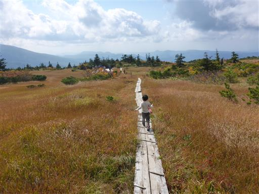
広大な湿原が広がる。背景は南八甲田の山並だ。
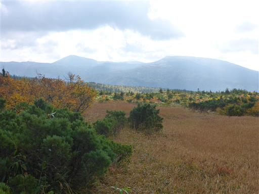
こちらは田茂萢岳。緑の斜面が美しい。
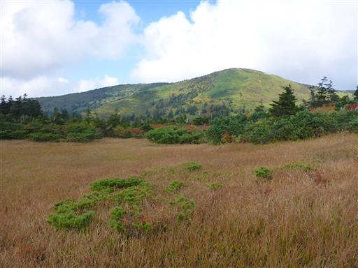
何箇所かに休憩所が設置されている。背景は先ほど登った大岳だ。
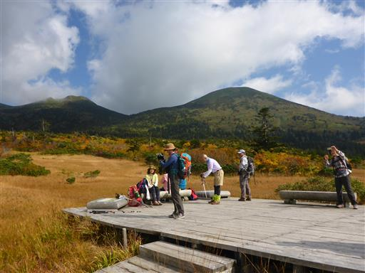
娘は池塘の水を棒でつついて遊んでいる。
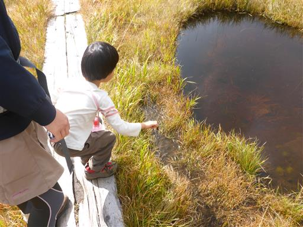
この辺りはチングルマの紅葉が広がる。初夏の景色も素晴らしそうだ。
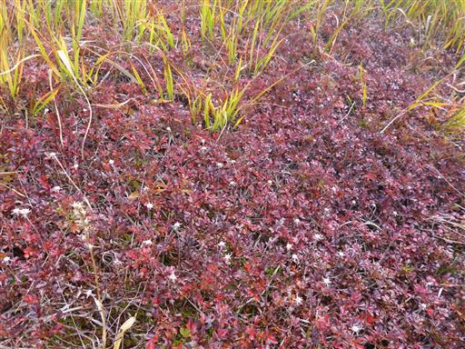
上毛無岱から樹林帯に入ってしばらく下ると、下毛無岱が見えてくる。
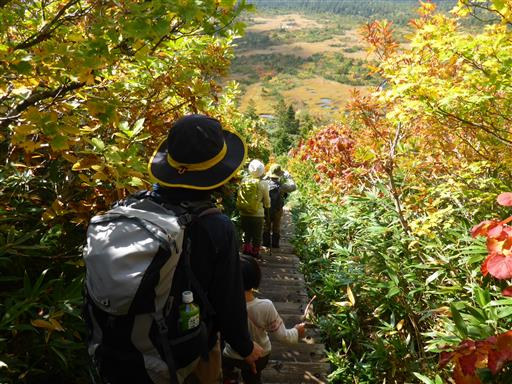
登山道から望む下毛無岱は素晴らしい絶景だ。
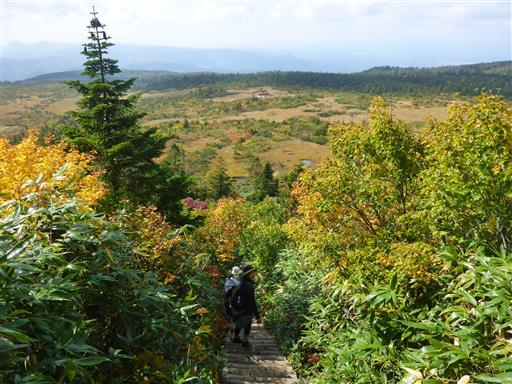
振り返って見上げた景色もまた素晴らしい。
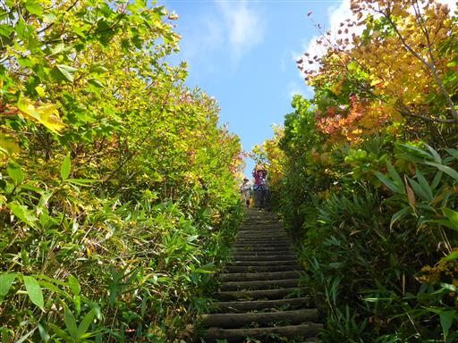
下毛無岱に到着。ここも広大な湿原が広がっている。
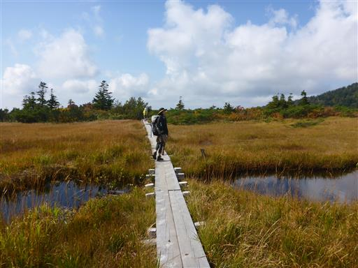
この辺りは紅葉の色づきが特に美しい。
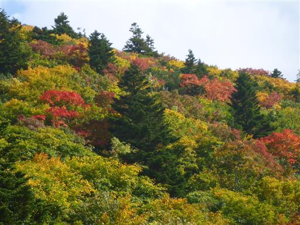
池塘の中にも植物が見られる。
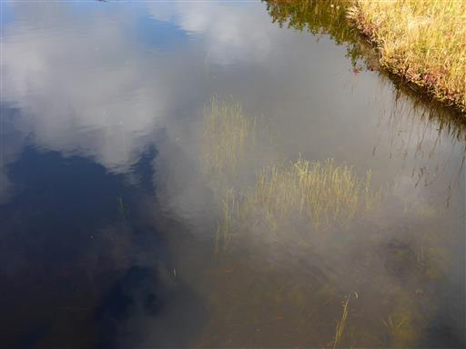
八甲田の山々を見渡す。左から赤倉岳、井戸岳、大岳。歩いてきた稜線だ。
これで八甲田山の眺めは見納めだ。
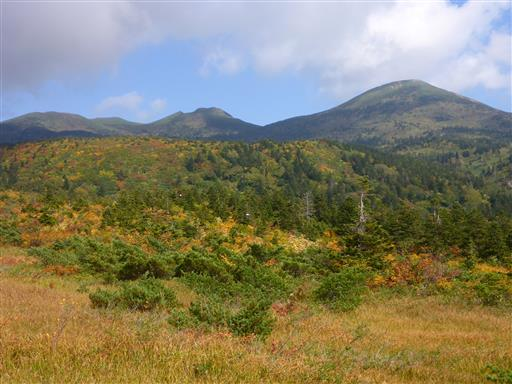
湿原が終わって樹林帯の中に入って行く。
バスの時間に間に合うか微妙で、この時期はタクシーが取れる保証もないため、
パーティを分けて息子と先に先行して下山することにする。
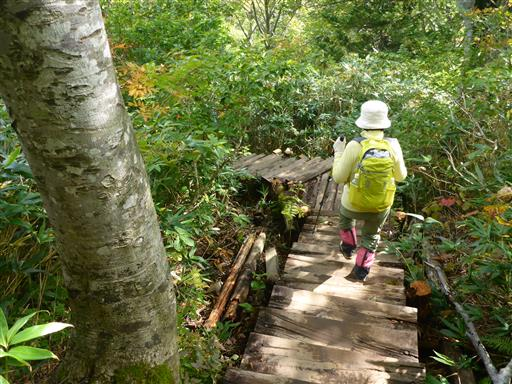
眼下に酸ヶ湯温泉の駐車場が見えてきた。
登山道は人が多くあまりスピードが出ないが、バスには十分間に合うペースなのでゆっくり下って行く。
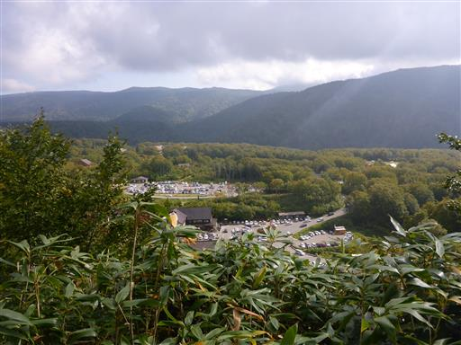
酸ヶ湯温泉に下山。非常に有名な温泉だ。
今回の旅行では温泉にゆっくり浸かっている暇がなかったが、老後の楽しみにとっておく。
トイレに行ってバス停に並ぶと9分遅れでもう娘が下ってきた。今日はかなり順調に歩いたようだ。
たまたまタクシーが来たので、時間節約のためタクシーで駐車場まで移動する。
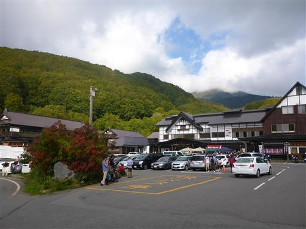
明日は帰るだけなので、本日は弘前に移動して東横インに宿泊する。
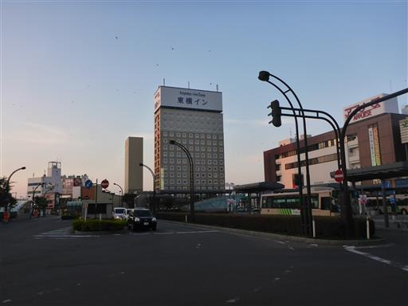
弘前といえば岩木山。ビルが邪魔だが、駅前からも良く見えている。
リンゴのポスト。さすがは青森県だ。
本日は「わいわい」という居酒屋で夕飯をとる。
5日目
今日は長い道のりを帰るだけ。遠く、八甲田山が見えている。晴れる時には晴れるものだ。
こちらは弘前のシンボル、岩木山。
思ったよりもずっと立派な姿だ。娘の足ではまだ登れないが、いつかは登ってみたい。
東北高速道から望む岩手山。
蔵王、吾妻、安達太良、那須と名峰を眺めながら帰宅する。
微妙な天候に悩まされた旅行だったが、それなりに行った甲斐がある景色が眺められた。
青森は遠かったので、次のシルバーウィークはもう少し近場に、
と考えていたら、なんとそれは11年後。遠い遠い先の話だ…